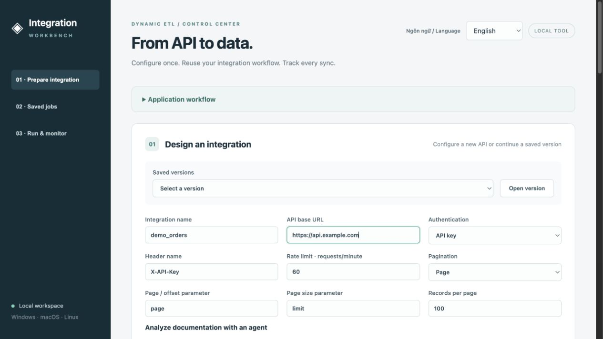

Less custom code.
More control over integration.
A web workspace for API configuration, database schema review, SQL generation and reusable integration jobs—built on a shared ETL runtime.
Explore the interactive demo →Read the documentationEnglish & Vietnamese · Local Python backend · Browser interface
Declare multiple endpoints or import API documents. Review configuration, nested tables, composite keys and SQL before saving a version.
Save named jobs with reviewed integration versions, parameters and repeat intervals. Inspect every job before execution.
Start separate workers and track status, cycles and logs. Reuse the existing authentication, retry and reconciliation logic.
A closer look at the actual interface
Real local screenshots with example configuration. Select a stage to explore.
Manage API settings, authentication, pagination and document input in one preparation workflow.

Explore the real frontend using synthetic sample definitions. Inspect tables and SQL, select jobs, and simulate start/stop. No credentials, model calls, source APIs or databases are connected. Real extraction, custom analysis and SQL regeneration require the local Python app.
From scripts to a reusable tool
I transformed an integration-specific ETL codebase into a web tool for managing API configuration, reviewing database schemas and SQL, saving jobs, and monitoring independent runs. The goal is to minimize duplicated code, streamline business workflows, and make integration more flexible and convenient while retaining existing business logic.
Setup, architecture and current limitations →